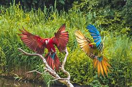

Alphen aan den Rijn
Alphen den Rijn heeft 112.587 inwoners
Heeft een oppervlakte van 132,5 kilometers
Heeft 2 grote bezienswaardigheden
Heeft 2 recreatie gebieden
Heeft 5 Winkelcentrums
Volgelpark Avifauna
Een gezellig dagje uit begint in Avifauna.
Bij ons kun je allerlei vogels en andere dieren bewonderen in hun natuurlijke leefomgeving.
Ontdek de meest kleurrijke vogels tijdens je reis door Avifauna, Maar ook rode panda’s, halfapen, mara’s en de reuzenmiereneter kun je van dichtbij bewonderen.
Je kan ook zelf nectar voeren aan de lori’s, woon de spectaculaire vogeldemonstraties en leerzame voederpresentaties bij, of laat je verrassen door de kleuren en geluiden in de Tropenhal.
Misschien ren je liever meteen naar de avontuurlijke speeltuin of kom je vooral om meer te leren over de natuur, maar altijd zorgen wij ervoor dat je een onvergetelijke dag beleeft!